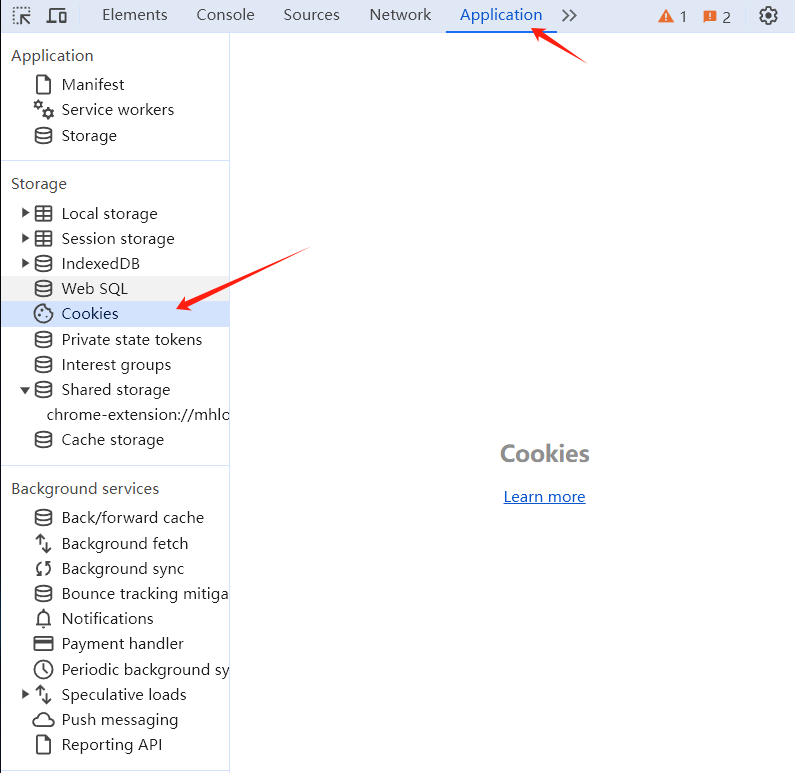
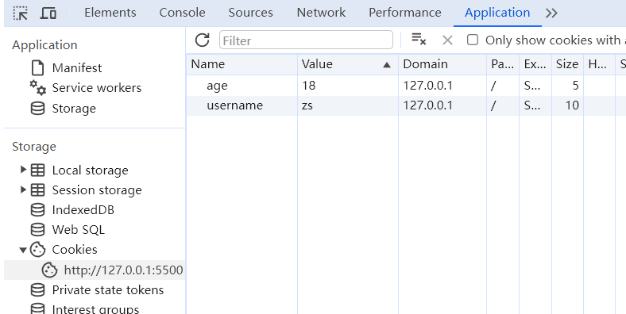
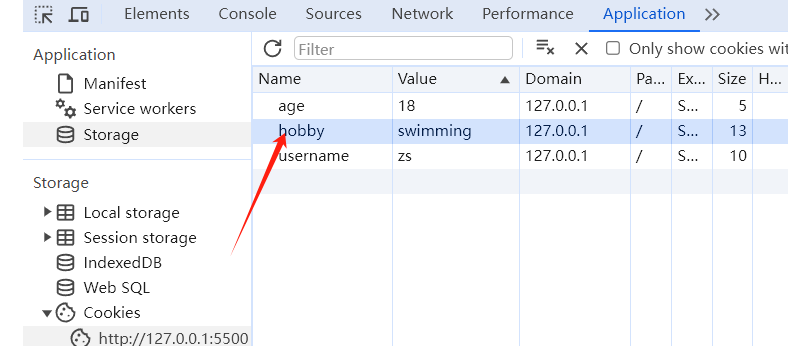
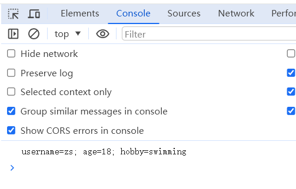
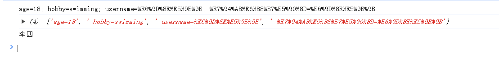
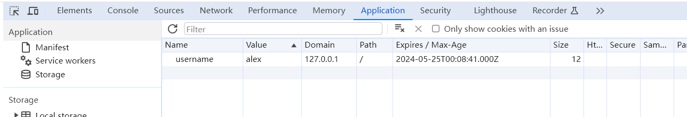

Cookie 是什么
Cookie 全称 HTTP Cookie，简称 Cookie,是浏览器存储数据的一种方式。Cookie 存储在用户本地，一般会自动随着浏览器每次请求发送到服务器端。
打开浏览器开发者工具，如下： 
Cookie 有什么用
可以利用 Cookie 跟踪统计用户访问该网站的习惯，比如什么时间访问，访问了哪些页面，在每个网页的停留时间等
注意：不要在 Cookie 中保存密码等敏感信息
Cookie 的基本用法
写入 Cookie
<!DOCTYPE html>
<html lang="en">
<head>
<meta charset="UTF-8" />
<meta name="viewport" content="width=device-width, initial-scale=1.0" />
<title>Document</title>
</head>
<body>
<script>
document.cookie = "username=zs";
document.cookie = "age=18";
</script>
</body>
</html>

读取 Cookie

<!DOCTYPE html>
<html lang="en">
<head>
<meta charset="UTF-8" />
<meta name="viewport" content="width=device-width, initial-scale=1.0" />
<title>Document</title>
</head>
<body>
<script>
console.log(document.cookie);
</script>
</body>
</html>

Cookie 属性
最重要的两个属性
Cookie 的名称（Name）和值（Value） 是最重要的两个属性，创建 时必须填写，其它属性可以使用默认值。
Cookie 的名称或值如果包含非英文字母，则写入时需要使用encodeURIComponent() 编码，读取时使用 decodeURIComponent() 解码
<!DOCTYPE html>
<html lang="en">
<head>
<meta charset="UTF-8" />
<meta name="viewport" content="width=device-width, initial-scale=1.0" />
<title>Document</title>
</head>
<body>
<script>
document.cookie = `username=${encodeURIComponent("李四")}`;
document.cookie = `${encodeURIComponent("用户名")}=${encodeURIComponent(
"李四"
)}`;
console.log(document.cookie);
const kvArr = document.cookie.split(";");
console.log(kvArr);
kvArr.forEach((value, index) => {
// console.log(`${index}:${value}`);
if (index == 2) {
const kv = value.split('=');
console.log(decodeURIComponent(kv[1]));
}
});
</script>
</body>
</html>

失效时间
对于失效的 Cookie，会被浏览器清除,如果没有设置失效（到期）时间，这样的 Cookie 称为会话 Cookie,它存在内存中，当会话结束，也就是浏览器关闭时，Cookie 消失。
想长时间存在，需要设置 Expires 或 Max-Age
expires
值为 Date 类型
<!DOCTYPE html>
<html lang="en">
<head>
<meta charset="UTF-8" />
<meta name="viewport" content="width=device-width, initial-scale=1.0" />
<title>Document</title>
</head>
<body>
<script>
const date = new Date()
date.setDate(date.getDate()+1)
console.log(date)
document.cookie = `username=alex; expires=${date}`;
</script>
</body>
</html>
Sat May 25 2024 00:08:43 GMT+0800 (中国标准时间)

max-age
值为数字，表示当前时间 + 多少秒后过期，单位是秒
<!DOCTYPE html>
<html lang="en">
<head>
<meta charset="UTF-8" />
<meta name="viewport" content="width=device-width, initial-scale=1.0" />
<title>Document</title>
</head>
<body>
<script>
document.cookie = "username=zhangsan1; max-age=5";
</script>
</body>
</html>
Domain 域
Domain 限定了访问 Cookie 的范围。使用 JS 只能读写当前域或父域的 Cookie，无法读写其他域的 Cookie。
以下面这个为例，限定 domain 为 .ychi.site，这样 blog.ychi.site 或者 email.ychi.site 都可以访问。
document.cookie = 'username=zhangsan; domain=.ychi.site';
当前域 blog.ychi.site 、email.ychi.site 父域 .ychi.site
Path
同一个域名下,Path 限定了访问 Cookie 的范围,使用 JS 只能读写当前路径和上级路径的 Cookie，无法读写下级路径的 Cookie
比如有 ychi.site/ 有 Cookie a=b ychi.site/blog 有 Cookie b=c
在ychi.site 下只能访问到 a=b 在 ychi.site/blog 可以访问到 a=b b=c
HttpOnly
设置了 HttpOnly 属性的 Cookie 不能通过 JS 去访问
Secure 安全标志
Secure 限定了只有在使用了 https 而不是 http 的情况下才可以发送给服务端 ./